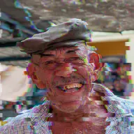

Glitch

Verschiebt Blöcke horizontal und Farbkanäle zufällig, wobei sich das Muster mehrmals pro Sekunde ändert.
Glitch verschiebt waagerechte Streifen des Bildes seitlich und trennt einige Male pro Sekunde die Farbkanäle. Intensität bestimmt, wie stark es ist, Blockhöhe, wie hoch die Streifen sind, und Zufallswert wählt ein anderes zufälliges Muster. Animiere die Intensität von 0 nach oben für einen kurzen digitalen Glitch an einem Schnitt.
Einstellungen
| Einstellung | Typ | Bereich | Standard |
|---|---|---|---|
| Intensität | Zahl | 0 bis 1 | 0.5 |
| Blockhöhe | Zahl | 4 bis 80 | 20 |
| Zufallswert | Zahl | 0 bis 1000 | 0 |